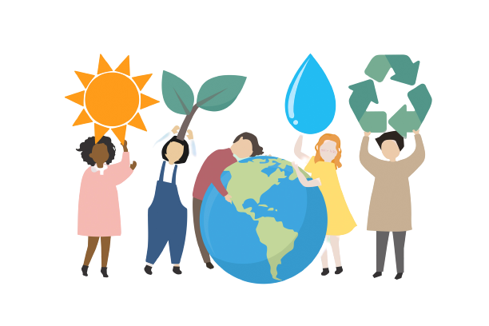

What is sustainability?
Sustainability consists of fulfilling the needs of current generations without compromising the needs of future generations, while ensuring a balance between economic growth, environmental care and social well-being.
As we saw above, plastics pose a grave problem for the oceans and, according to the United Nations data, over 3 million people depend on the seas for their subsistence. Thus, the current situation needs to change if we want to meet Goal No. 14 of the Sustainable Development Goals (SDGs): "Conserve and sustainably use the oceans, seas and marine resources for sustainable development".

Types of Sustainability:
Environmental Sustainability
Environmental sustainability encompasses the conservation and maintenance of the environment.
It is important to note that, for environmental sustainability to be effective, people must be in harmony with the environment, in order to improve their quality of life.
The objective of environmental sustainability is that the interests of future generations are not compromised by satisfying the needs of the present generation.
Social Sustainability
Social sustainability suggests the equality of individuals, based on the well-being of the population.
For this, the participation of the population is necessary, in order to strengthen the proposals for social development, access to education, culture and health.
Corporate sustainability
Currently, many corporate social responsibility strategies are based on sustainability.
Sustainable products and actions in the business area gain prominence and the taste of consumers. People are increasingly aware of the ecological and social weight of their choices.
In this case, the company has a responsible attitude towards environmental and social values. In addition to being based on preserving the environment and improving people's quality of life
What Are The Benefits Of Sustainability?
- Improved quality of life.
- Preservation of biodiversity and natural resources.
- Reduction of environmental disasters.
- Adopting healthier and more conscious habits.
- More socially responsible companies.
- Reduction of social inequality and all forms of prejudice.
- Food safety.
- Improved economy due to eco-efficiency
The challenges are:
- Minimize the effects of climate change on the Planet.
- Reduce energy consumption to ensure future supply.
- Eliminate waste and preserve natural resources.
- Ensuring health and well-being.